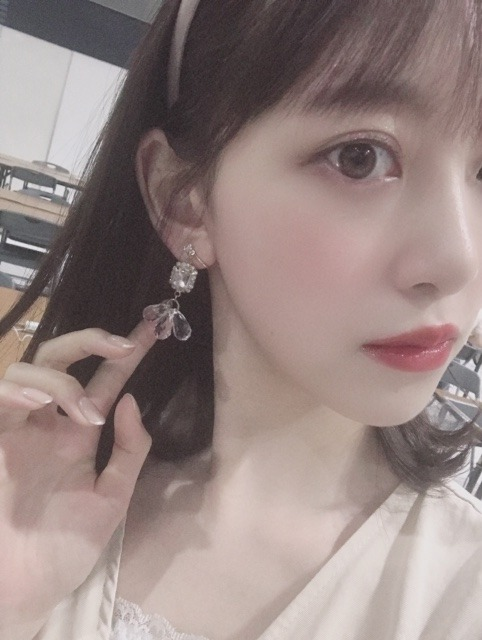

2019/0909Mon #mionafashion

オトナかわいい ファッションが最近はすきです❤︎
この日は友達と映画&ランチだったのでドレッシーな感じにしてみました~
DIANAのこのサンダルは、履き心地もいいしデザインも上品でかれこれ2〜3年愛用してます
靴擦れしやすいのですがDIANAの靴はあまり靴擦れしないから信頼してます！
one-piece...milkcocoa
bag...FURFUR
クレドポーのリップスティックとWHOMEEのリップペンシルを重ね塗りするのが最近のブーム❤︎
ツヤツヤにしてからマットを重ねるの、良き！


このイヤリングは海外旅行行った時に買ったもので、わたしはピアスが開いてないのでかわいいイヤリングを見つけたら衝動買いしちゃいます❤︎❤︎
~アイメイク紹介~

キラ艶まぶた，まつげのあげ方，にこだわってます！
マスカラ、アイラインは絶対茶色で
アイシャドウも赤茶系にしてます
まつげはビューラー マスカラ下地 マスカラ ホットビューラーの順で目頭、黒目の上あたりは上にくるんってあげるけど目尻はビューラーを逆さにして下にまつげをさげてます☺︎
下まつ毛もかなり大事！必ずつけてます。
目の重心を下に下げることしか考えてないです。笑
自分がどういう目や顔になりたいかでメイクは変えていくべきだとおもうので今はナチュラルなタレ目メイクを研究中です！
マスカラは断然ヒロインメイク派だけどamplitudeのブラウンマスカラもかなり良きでした☺︎
WHOMEEのマスカラもたのしみです
今年の秋冬はヴィンテージ感のあるものも取り入れながら品のあるフランスにいそうなオトナかわいい女子をファッションもメイクも目指したいなぁ...❤︎
では！
2019/09/09 16:30
コメント(310)
最高かよ！
ワンピースがこんなに似合っちゃうんだな。
女子と飯でも食うなら、絶対着てほしい。華やかさがあるから。たまんないなー
女子と飯でも食うなら、絶対着てほしい。華やかさがあるから。たまんないなー
未央奈ちゃんいつもブログ更新ありがとう！☺︎︎
久しぶりにコメントしました！
未央奈ちゃんのこういうファッション、美容、コスメを沢山紹介してくれるブログや755大好き❤︎❤︎
頭の先から足の先まで全てが憧れでタイプすぎる( ; _ ; )
キラキラ感溢れててほんとお姫様みたい〜〜！
アイメイク参考にさせてもらいます！！
体調には気をつけてね！大好き〜！❤︎
久しぶりにコメントしました！
未央奈ちゃんのこういうファッション、美容、コスメを沢山紹介してくれるブログや755大好き❤︎❤︎
頭の先から足の先まで全てが憧れでタイプすぎる( ; _ ; )
キラキラ感溢れててほんとお姫様みたい〜〜！
アイメイク参考にさせてもらいます！！
体調には気をつけてね！大好き〜！❤︎
未央奈ちゃん＼(^o^)／お疲れ様でした
相変わらずの透明感だな可愛いよ＼(^o^)／♡♡♡
これからも頑張って(/･ω･)/
相変わらずの透明感だな可愛いよ＼(^o^)／♡♡♡
これからも頑張って(/･ω･)/
いつも思うけど、未央奈のおめめってぱっちりしてて可愛い☺️
メイクのことは分からないんですが、未央奈ちゃんが努力してることは分かりました！
おめめパッチリ未央奈ちゃんは、こうして生まれてるんですねー♪☆
おめめパッチリ未央奈ちゃんは、こうして生まれてるんですねー♪☆
こんばんは。
綺麗なお姉さん、シルエットが細いのに驚嘆します。
ますます綺麗に可愛くなっていくので、ドキドキしっぱなしです。
ライブもホットギミックもですが、明らかに未央奈さんのメイクやファッションに感化された女の子達の多さに驚きます。
そのセンスを共有できるフォトブック等の書籍や、ネット動画でも、女子限定のお披露目会等の場の機会ができたらホント良いですよね。
ファンの方々が欲しているその力を広めたいし、機会損失でもったいないです。
明日はより暑いとか、気をつけてくださいね。
頑張って行きましょう！
綺麗なお姉さん、シルエットが細いのに驚嘆します。
ますます綺麗に可愛くなっていくので、ドキドキしっぱなしです。
ライブもホットギミックもですが、明らかに未央奈さんのメイクやファッションに感化された女の子達の多さに驚きます。
そのセンスを共有できるフォトブック等の書籍や、ネット動画でも、女子限定のお披露目会等の場の機会ができたらホント良いですよね。
ファンの方々が欲しているその力を広めたいし、機会損失でもったいないです。
明日はより暑いとか、気をつけてくださいね。
頑張って行きましょう！
みおなちゃん、アイメイク紹介してくれてありがとう❤️
なんでそんなに綺麗にまつ毛上がるのか…。
やっぱメイクは研究に研究するしかないですよね。
みおなちゃんみたいなお顔が理想なので私も頑張ります！
なんでそんなに綺麗にまつ毛上がるのか…。
やっぱメイクは研究に研究するしかないですよね。
みおなちゃんみたいなお顔が理想なので私も頑張ります！
やっぱり未央奈ちゃん好きやわ！
未央奈ブログ更新ありがとう！
こういうファッションの未央奈もすごく好き。こんな彼女と映画&ランチ行きたいよ感。本当に未央奈はおしゃれだなあ。
イヤリングも似合ってて可愛い。あと未央奈はカチューシャも似合うよね。
メイクとか僕にはよくわからないけど未央奈は研究熱心だね。研究しすぎて未央奈がもっと可愛くなっちゃったらどうしよう。
秋冬のオトナかわいい未央奈を楽しみにしてるよ！
では！
こういうファッションの未央奈もすごく好き。こんな彼女と映画&ランチ行きたいよ感。本当に未央奈はおしゃれだなあ。
イヤリングも似合ってて可愛い。あと未央奈はカチューシャも似合うよね。
メイクとか僕にはよくわからないけど未央奈は研究熱心だね。研究しすぎて未央奈がもっと可愛くなっちゃったらどうしよう。
秋冬のオトナかわいい未央奈を楽しみにしてるよ！
では！
いつも癒されます！！
素敵です！！
素敵です！！
かわいいー！！！
映画はなにをみたんですか？
映画はなにをみたんですか？
お疲れ様なのです└(ﾟ∀ﾟ└) (┘ﾟ∀ﾟ)┘
都会のオアシスに迷いこんだ妖精さんや～(つд⊂)
耳たぶが可愛い(*≧з≦)よ
素の状態を大事にね！(σ*´∀｀)
ピアス開けなくたって、お洒落できるもん！
ワンピースの柄が植物で可愛い！
イヤリング色々？最近はどんなのをよく付けますか？
体調に気を付けて(´＿｀。)ﾞ
んじゃね～！Σ⊂(ﾟДﾟ )
お洒落さんやな～(≧ω≦。)
都会のオアシスに迷いこんだ妖精さんや～(つд⊂)
耳たぶが可愛い(*≧з≦)よ
素の状態を大事にね！(σ*´∀｀)
ピアス開けなくたって、お洒落できるもん！
ワンピースの柄が植物で可愛い！
イヤリング色々？最近はどんなのをよく付けますか？
体調に気を付けて(´＿｀。)ﾞ
んじゃね～！Σ⊂(ﾟДﾟ )
お洒落さんやな～(≧ω≦。)
未央奈たくさん！
ありがと( ´∀｀)σ)∀`)
きれいだよ！！！
ありがと( ´∀｀)σ)∀`)
きれいだよ！！！
みおなちゃん‼
ブログ更新ありがとう!!!!
今日も可愛いね‼
大好き
昨日の乃木坂工事中の神宮の時、みおなちゃんがサングラスを下にして、撮られてた写真めっちゃ可愛かった〜
すっぴんでも可愛いなんて、羨ましいな〜
また、みおなちゃんが使ってるコスメ、教えてください‼お願いします‼
ブログ更新ありがとう!!!!
今日も可愛いね‼
大好き
昨日の乃木坂工事中の神宮の時、みおなちゃんがサングラスを下にして、撮られてた写真めっちゃ可愛かった〜
すっぴんでも可愛いなんて、羨ましいな〜
また、みおなちゃんが使ってるコスメ、教えてください‼お願いします‼
未央奈、ブログ更新お疲れ様です。
未央奈の可愛く綺麗になろうとする行動が大好き。今でも十分綺麗なのに！
ワンピとイヤリングも可愛くていいですね。
未央奈の可愛く綺麗になろうとする行動が大好き。今でも十分綺麗なのに！
ワンピとイヤリングも可愛くていいですね。
堀ちゃん連日のブログ更新ありがとう。
今日は女性向けブログだね。
今日のショットも最高にかわいい。
こんな堀ちゃんとデートしたいな、なんてね(笑)
昨日の握手会でも自分の前も女性だったしね
堀ちゃんは女性ファンも多いね。
うなずけるよ。
またブログ更新楽しみにしてます。
では
今日は女性向けブログだね。
今日のショットも最高にかわいい。
こんな堀ちゃんとデートしたいな、なんてね(笑)
昨日の握手会でも自分の前も女性だったしね
堀ちゃんは女性ファンも多いね。
うなずけるよ。
またブログ更新楽しみにしてます。
では
２日連続更新ありがとう。
ファッションの事とかメイクの事は
わからないけど、
ワンピース似合ってます。
かわいい
メイクも日々研究してるんですね。
女性って大変ですね。
写真かわいいです
ファッションの事とかメイクの事は
わからないけど、
ワンピース似合ってます。
かわいい
メイクも日々研究してるんですね。
女性って大変ですね。
写真かわいいです
ブログ更新本当にありがとう(*^-^*)ホント可愛い(* >ω<)イヤリングもファッションも綺麗で本当似合ってる☆これからも頑張って下さい(=ﾟωﾟ)ﾉ
ブログ更新ありがとー！
メイクって少し変えるだけで雰囲気変わるからすごいですよね！
メイクって少し変えるだけで雰囲気変わるからすごいですよね！
未央奈がデートの時にこんな大人なファッションで登場したら、めちゃくちゃ可愛くて見入ってしまいそうだな〜(^-^)
更新有難う！
御疲れ様でした！
とても可愛いです。
何時も頑張って下さい、
常に必ずしても応援しています。
どうか御身体に気を付けて下さい！
ずっと大好き！

御疲れ様でした！
とても可愛いです。
何時も頑張って下さい、
常に必ずしても応援しています。
どうか御身体に気を付けて下さい！
ずっと大好き！
未央奈ブログ更新ありがとうございます！
オシャレすぎて…街中でみっけたら1コロです！
お仕事頑張ってくださーい。
オシャレすぎて…街中でみっけたら1コロです！
お仕事頑張ってくださーい。
可愛すぎる！お洒落すぎる！以外に言葉が出て来ないです。
大人コーデ似合って可愛い未央奈ちゃん、
背が伸びた感じがする。
メイクやファッション勉強になる。
ありがとー未央奈ちゃん、また、紹介お願いします。
ブログ更新ありがとーそれでは。
背が伸びた感じがする。
メイクやファッション勉強になる。
ありがとー未央奈ちゃん、また、紹介お願いします。
ブログ更新ありがとーそれでは。
ブログ更新ありがとう☺
オトナ可愛いね(*´ч`*)
綺麗✨
オトナ可愛いね(*´ч`*)
綺麗✨
ブログ更新ありがとう！
メイク参考にしてます！！！❤️
体調には気をつけて
応援してます
メイク参考にしてます！！！❤️
体調には気をつけて
応援してます
未央奈、ブログ更新ありがとう！
未央奈のファッションめっちゃすきー！！
ピアスの穴開けてると思ってた！
いつもイヤリングやったんやー！！
未央奈のファッションめっちゃすきー！！
ピアスの穴開けてると思ってた！
いつもイヤリングやったんやー！！
美人ですね！！
やほ♡
秋といえばファッションですね～♪
今回はぐっとドレッシーですよー！
とっても大人カワイイ感じですね♡
イヤリングとっても効いてますよー！
ピアス穴が開いてないのも好きです♡
メイクからは秋らしさを感じますし、
最近は目のメイクに凝ってますよね☆
昨夜の乃木中のリハ姿も貴重でした！
休憩室でお野菜を食べてた姿も、
とっても可愛いらしかったです♡
みおちゃんは、
ヴィンテージファッションも似合います☺
秋といえばファッションですね～♪
今回はぐっとドレッシーですよー！
とっても大人カワイイ感じですね♡
イヤリングとっても効いてますよー！
ピアス穴が開いてないのも好きです♡
メイクからは秋らしさを感じますし、
最近は目のメイクに凝ってますよね☆
昨夜の乃木中のリハ姿も貴重でした！
休憩室でお野菜を食べてた姿も、
とっても可愛いらしかったです♡
みおちゃんは、
ヴィンテージファッションも似合います☺
ブログ更新ありがと！！
服めちゃくちゃ可愛いです！！
服めちゃくちゃ可愛いです！！
フランス人形のように上品で趣きがある未央奈ちゃん、こんばんは！
好き。
うわ！可愛い。遊びにいける友達って、羨ましいなぁ。こんなに可愛い人と一緒なら映画のスクリーンより、未央奈の横顔をずっと見ている事になっちゃうよ。
未央奈は女性の憧れです!!!
めっちゃキレイーーー だーいすき
めっちゃキレイーーー だーいすき
未央奈ちゃんブログありがとう！
かわいいのはもちろんですが、美しいですね(*´∀｀*)
背景とマッチしててめちゃくちゃ画になりますね！ファッショニスタですねほんとに(^_^)
肌も白いしほんとにフランスに馴染みそうですね未央奈ちゃんは(^^)
僕も服好きなので、未央奈ちゃんのようにファッショニスタになれるように頑張ります！
かわいいのはもちろんですが、美しいですね(*´∀｀*)
背景とマッチしててめちゃくちゃ画になりますね！ファッショニスタですねほんとに(^_^)
肌も白いしほんとにフランスに馴染みそうですね未央奈ちゃんは(^^)
僕も服好きなので、未央奈ちゃんのようにファッショニスタになれるように頑張ります！
未央奈さん、こんばんは。
お友達とランチ・・・。
いいところですね。
どこなんだろう・・・。
いずれにしてもくつろげたようで良かったです。
台風、大丈夫だった。
暑いね。
お友達とランチ・・・。
いいところですね。
どこなんだろう・・・。
いずれにしてもくつろげたようで良かったです。
台風、大丈夫だった。
暑いね。
可愛い・・・
可愛い❤️今日は 無くて心配してました。オシャレですよ。未央奈さんと馬が合いそう‼️。何か年が20歳↑だけどね乃木坂46さん自分の娘さん見たい。皆謙虚ですねまめにメールありがとう ✨。
更新ありがとうございます。
DIANAの靴歩きやすくて大好き♡
マスカラ良いの探し中だったからヒロインメイク使ってみるね(*^ω^*)
マスカラ良いの探し中だったからヒロインメイク使ってみるね(*^ω^*)
今晩は!昨日の全国握手会お疲れ様です!
カチューシャ似合ってますね!
もう暫くは暑い日が続きますんでこまめに水分補給塩分補給し呉々も熱中症には勿論気を付けて頂きたいですけれども、台風には呉々も気を付けて下さい!
では3ヶ月後の握手会でお会いしましょう!
お休みなさい!
ブログありがとう！！
最近未央奈ちゃんの影響で全く興味なかったメイクとかもやってみたい！って思ってきたの！！
でも全然やり方とかわからないからブログとかで教えてくれるの嬉しい！！
最近未央奈ちゃんの影響で全く興味なかったメイクとかもやってみたい！って思ってきたの！！
でも全然やり方とかわからないからブログとかで教えてくれるの嬉しい！！
徐々にアップになって最後に目元まで寄ってドキッとした！
未央奈ちゃんホント可愛い過ぎ！
未央奈ちゃんホント可愛い過ぎ！
服すごいオシャレ！！大人っぽい服も似合ってて可愛い(*´ч`*)
未央奈ちゃんブログ更新ありがとう！
#mionafashion最高！！
DIANAの靴いいよね
デザインもひとつひとつこってて
可愛いし、わたしも好き〜(⁎˃ᴗ˂⁎)
メイク講座もありがとう！
また化粧品色々ためしてみるね！
マスカラ欲しかったから
未央奈ちゃん使ってるものを
買ってみる( ¯꒳¯ )ｂ✧
いつも情報ありがとう( ᵕᴗᵕ )
#mionafashion最高！！
DIANAの靴いいよね
デザインもひとつひとつこってて
可愛いし、わたしも好き〜(⁎˃ᴗ˂⁎)
メイク講座もありがとう！
また化粧品色々ためしてみるね！
マスカラ欲しかったから
未央奈ちゃん使ってるものを
買ってみる( ¯꒳¯ )ｂ✧
いつも情報ありがとう( ᵕᴗᵕ )
可愛すぎ！！
未央奈お疲れ様！
ブログ更新ありがとう！
ワンピースめっちゃ似合ってる！
やっぱ明るい色が好きなんだね！
カチューシャとイヤリングもかわいい！
男性の好きな髪型ってなに？
急な質問ごめん！答えてくれたら嬉しい！
これからも応援してる！
がんばれー！
ブログ更新ありがとう！
ワンピースめっちゃ似合ってる！
やっぱ明るい色が好きなんだね！
カチューシャとイヤリングもかわいい！
男性の好きな髪型ってなに？
急な質問ごめん！答えてくれたら嬉しい！
これからも応援してる！
がんばれー！


たまにはこうゆうブログもいいよね！それにしてもかわいすぎ、、♡今の髪の長さ似合ってる！！最近よくやってるハーフアップみたいな髪型ほんとに可愛くてめちゃめちゃ似合ってる
服とかメイクとかたくさん発信してくれて嬉しい〜！大学生になってバイトしてお金貯めて未央奈ちゃんとおそろい買いたいなあ、、
またブログ更新待ってるね！